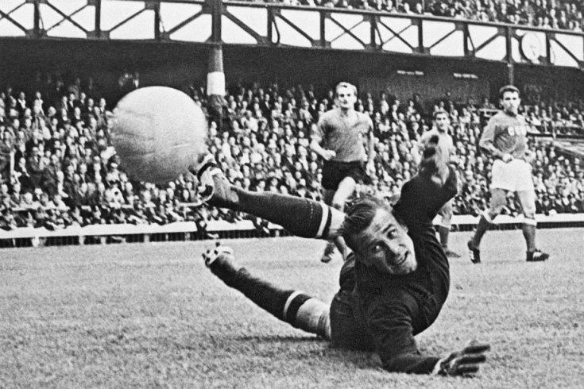

Історія футболу почалася дуже давно. Так, наприклад, і в Єгипті і в Німеччині, і в Китаї були ігри схожі на футбол. Найвдаліша з них називалася Гарпастум і придумали її італійці. Але коли з'явився сучасний футбол, Харпастум був забутий. Коли англійці придумали футбол, вони відразу стали популяризувати його у всіх країнах, включаючи Росію. У той час в чемпіонаті брало участь багато англійських команд. Про футбол в Росії вперше було сказано в книзі одного з лікарів «гри з м'ячем на повітрі». Отже, футбол - одна з найстаріших спортивних ігор, походження якої відноситься до далекого минулого. Французькі історики футболу стверджують: прямим предком сучасного футболу можна сміливо назвати «ла суль» - гру, в якій дві команди ганяли шкіряний м'яч, наповнений ганчірками або повітрям. Ця гра вже в середні століття була популярна у Франції. Ні, не від «ла суль", а від «кальчо» - гри, поширеної в XVI столітті у Флоренції, - пішов сучасний футбол, стверджують італійські спортивні історики. На доказ згадують, що в «кальчо» грали шкіряним м'ячем на полях розмірами 100х50 м.

На Русі з незапам'ятних часів теж існували гри з м'ячем, схожі на футбол. Грали в постолах на льоду річок або на базарних площах шкіряним м'ячем, набитим пір'ям. Одна з таких ігор називалася «Шалига»: гравці ногами прагнули загнати м'яч в «місто» противника. Цікаве опис російського футболу дав в «Нарисах бурси» письменник Н. Г. Помяловський: «На лівій стороні двору близько сімдесяти чоловік грають в килу - шкіряний, набитий волосом м'яч, величиною в людську голову. Дві партії сходилися стіна на стіну; один з учнів вів килу, повільно пересуваючи її ногами, в чому полягав верх мистецтва грі, тому що від сильного удару м'яч міг перейти в протилежну сторону-в табір ворога, де і заволоділи б їм ... «кила!» - закричали учні, - це означало, що місто здобуте. Переможці в захваті і з гордістю поверталися на своє місце. Їм весело..." На гру в м'яч російські люди йшли охочіше, ніж до церкви, тому саме церковники в першу чергу закликали до викорінення народних ігор.